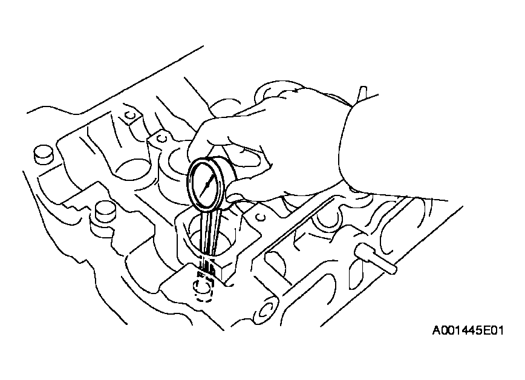

Cylinder Head, Intake Manifold, Exhaust Manifold: Replacement
- REPLACE INTAKE VALVE GUIDE BUSH
- Heat the cylinder head to 80 to 100°C (176 to 212°F).
- Using SST and a hammer, tap out the guide bush.
SST 09201-10000 (09201-01050), 09950-70010 (09951-07100)
- Using a caliper gauge, measure the bush bore diameter of the cylinder head.
Standard bore diameter
BUSH BORE DIAMETER SPECIFICATIONBush size Specified Condition STD 9.685 to 9.706 mm (0.3813 to 0.3821 in.) O/S 0.05 9.735 to 9.756 mm (0.3833 to 0.3841 in.) 
Courtesy of © TOYOTA, LICENSE AGREEMENT TMS1002If the bush bore diameter of the cylinder head is greater than 9.706 mm (0.3821 in.), machine the bush bore to a dimension of 9.735 to 9.756 mm (0.3833 to 0.3841 in.).
If the bush bore diameter of the cylinder head is greater than 9.755 mm (0.3841 in.), replace the cylinder head.
- Heat the cylinder head to 80 to 100°C (176 to 212°F).
- Using SST and a hammer, tap in a new guide bush to the specified protrusion height.
SST 09201-10000 (09201-01050), 09950-70010 (09951-07100)
Standard protrusion height: 9.0 to 9.4 mm (0.354 to 0.370 in.)
- Using a sharp 5 mm reamer, ream the guide bush to obtain the standard specified clearance between the guide bush and the valve stem.
Standard oil clearance: 0.025 to 0.060 mm (0.0010 to 0.0024 in.)
- REPLACE EXHAUST VALVE GUIDE BUSH
- Heat the cylinder head to 80 to 100°C (176 to 212°F).
- Using SST and a hammer, tap out the guide bush.
SST 09201-10000 (09201-01050), 09950-70010 (09951-07100)
- Using a caliper gauge, measure the bush bore diameter of the cylinder head.
Standard bore diameter
BUSH BORE DIAMETER SPECIFICATIONBush size Specified Condition STD 9.685 to 9.706 mm (0.3813 to 0.3821 in.) O/S 0.05 9.735 to 9.756 mm (0.3833 to 0.3841 in.) If the bush bore diameter of the cylinder head is greater than 9.706 mm (0.3821 in.), machine the bush bore to a dimension of 9.735 to 9.756 mm (0.3833 to 0.3841 in.).
If the bush bore diameter of the cylinder head is greater than 9.755 mm (0.3841 in.), replace the cylinder head.
- Heat the cylinder head to 80 to 100°C (176 to 212°F).
- Using SST and a hammer, tap in a new guide bush to the specified protrusion height.
SST 09201-10000 (09201-01050), 09950-70010 (09951-07100)
Standard protrusion height: 9.0 to 9.4 mm (0.354 to 0.370 in.)
- Using a sharp 5 mm reamer, ream the guide bush to obtain the standard specified clearance between the guide bush and valve stem.
Standard oil clearance: 0.030 to 0.065 mm (0.0012 to 0.0026 in.)